En Colombia, el periodo comprendido entre los años 1900 y 1930 se conoce como la Hegemonía conservadora. Hegemonía en este caso significa la supremacía que tuvo la participación del Partido Conservador en la dirección del Estado.
-
01
La Hegemonía conservadora
Open or CloseAunque el periodo de esta hegemonía inicia en 1900, la Guerra de los Mil Días (1899-1903) así como la Regeneración son antecedentes que deben tenerse en cuenta para comprender por qué los conservadores estuvieron por tres décadas en el poder.
¡Recuerda!
La Hegemonía conservadora, que ocurrió entre 1900 y 1930, tiene su origen en la Regeneración y la Guerra de los Mil Días. Llegó luego del caos y la tragedia que implicó una confrontación civil que dejó al país devastado, con miles de víctimas, epidemias y una situación económica deplorable.
01.1La Regeneración
En la segunda mitad del siglo XIX Colombia vivió guerras civiles y confrontaciones entre los partidos, que a su vez tenían pugnas internas: había liberales radicales y liberales independientes, así como conservadores históricos y conservadores nacionalistas.
Entre 1863 y 1886 el país estuvo bajo el mando de los liberales radicales. Aquello se conoció como el "Olimpo radical". El país se rigió por la Constitución de Rionegro que se promulgó en 1863.
Durante esta etapa, la población tuvo más acceso a la educación, se crearon más periódicos y se fundó la Universidad Nacional. Sin embargo, algunos sectores de la sociedad, particularmente los más conservadores, veían con malos ojos que el Estado se apartara de la Iglesia.
Fue una época que trajo optimismo a los sectores populares pero que a la vez le fue cerrando el paso a la participación de los conservadores lo que acarreó guerras civiles que se vivieron en distintos puntos del territorio.
¡Recuerda!
La Constitución de 1863 había abolido la pena de muerte, separado a la Iglesia del Estado, decretado la educación laica y el libre cambio. Así mismo, promovió la libertad de culto y de pensamiento. En el campo administrativo y político, la Constitución estableció una confederación de nueve Estados soberanos. Llegó a su fin en 1886, con la Regeneración y el gobierno de Rafael Núñez.
La división entre liberales independientes y radicales fue aprovechada por los conservadores. Rafael Núñez, liberal independiente que recibió el apoyo de estos últimos, ganó las elecciones de 1880. Desde entonces él y el conservador Miguel Antonio Caro tomaron las riendas del país, reformaron la Constitución y aplicaron una serie de medidas para poner en práctica un proyecto de nación basado en la cláusula "Libertad y Orden".
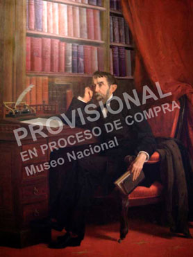Óleo de Epifanio Garay. Museo Nacional, Bogotá, Colombia. Rafael Núñez fue presidente en tres periodos (1880-1882) (1884-1886) (1887-1888). Fue la figura central de la Regeneración, etapa de la política colombiana que tumbó la Constitución de 1863 y con ello incorporó principios conservadores en una nueva Constitución que rigió tanto al Estado y la nación hasta 1991.
La Regeneración
Rafael Núñez y Miguel Antonio Caro dirigieron un proyecto de Regeneración que buscaba estabilidad a partir del fortalecimiento del poder ejecutivo y del gobierno central; del papel de la Iglesia en el control moral y educativo, y de la limitación a los poderes regionales.
01.1.1La Constitución de 1886
El principal aspecto que caracterizó a la Regeneración fue la reforma constitucional. Con la Constitución promulgada en 1886 la vida política del país cambió. Los ejes de la transformación fueron los siguientes:
- De federalista, la república pasó a ser centralista (ya no hubo estados autónomos sino departamentos). Así mismo, el poder ejecutivo se fortaleció y se amplió el periodo presidencial; pasó de dos a seis años.
- El sufragio fue un derecho solamente para hombres, propietarios y que supieran leer.
- La religión católica se convirtió en el principal mecanismo de cohesión del orden social. La Iglesia pasó a tener un papel protagónico en la vida política, social y cultural del país. Entre otras cosas, decidió sobre los contenidos que se estudiaban en las escuelas, colegios y universidades.
- Se firmó el Concordato, un acuerdo solemne establecido entre la Santa Sede y la autoridad suprema de un país para reglamentar las relaciones mutuas entre la Iglesia católica y el Estado y declarar los derechos y deberes recíprocos [VER].
- Se estableció la censura de prensa y el control sobre publicaciones como libros o cartillas.
- Se creó la Ley de los Caballos que le dio libertad al presidente para desterrar y confinar a los opositores al gobierno sin que tuvieran la posibilidad de defenderse en un juicio.
¡Recuerda!
Con la Constitución de 1886 dejamos de llamarnos Estados Unidos de Colombia y empezamos a llamarnos República de Colombia. Se eliminaron los estados federales y se crearon los departamentos.
Por más que se quiso, la Regeneración no logró homogenizar a la sociedad e imponer el orden esperado. Para los liberales y grupos de librepensadores la injerencia de la Iglesia católica en todas las decisiones políticas iba en contravía de las ideas modernizadoras. Además, el sistema electoral y la posibilidad de la reelección dejaron sin espacio político a los liberales que tampoco podían manifestar sus opiniones a través de la prensa.
01.2La Guerra de los Mil Días
Rafael Núñez murió en 1894 quedando en el poder Miguel Antonio Caro hasta 1898, año en que fue elegido otro conservador: Manuel Sanclemente.
Además del desalentador panorama político, en que los liberales habían sido completamente excluidos, el panorama económico empezó a empeorar con el derrumbe de los precios de los principales productos colombianos, como el café.
Los liberales radicales, con Rafael Uribe Uribe y Benjamín Herrera a la cabeza, se levantaron en armas en todo el país, aunque el epicentro fue el departamento de Santander.
Esta guerra duró desde el 17 de octubre de 1899 hasta el 21 de noviembre de 1902 e involucró a la totalidad de la población del país, incluyendo a los niños y a las mujeres. Para los liberales el acceso a las armas fue muy limitado, por ello en muchas ocasiones pelearon con piedras o machetes. Esto los puso en desventaja frente al Ejército nacional que, justamente en 1886, había empezado a dotarse de armamento.
¡Recuerda!
La República de Colombia vio terminar el siglo XIX y empezar el XX con una guerra que duró tres años, afectó a la totalidad del territorio e involucró a toda la población.
Las batallas de Bucaramanga, Peralonso y Palonegro fueron definitivas para el desarrollo de la guerra debido a que definieron la relación de fuerzas entre los bandos. En la de Bucaramanga, ocurrida entre el 11 y el 13 de noviembre, Rafael Uribe Uribe intentó tomarse la ciudad con su ejército de liberales mal armados y rápidamente fue derrotado. Por el contrario, en la de Peralonso triunfaron los liberales, asunto que les dio más fuerza moral para seguir. Pero en la de Palonegro fueron derrotados nuevamente. Estas guerras fueron tremendamente sangrientas. El número de bajas se contaba por centenas en cada batalla.
Luego de estas contiendas, los liberales organizaron guerrillas y el gobierno respondió con más fuerza. Esto recrudeció la guerra y terminó involucrando a la población civil.
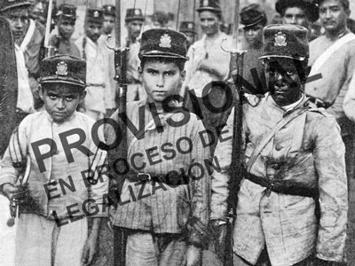En la Guerra de los Mil Días la población civil debió tomar parte. Ello recrudeció la violencia y convirtió la confrontación en una guerra entre hermanos. Niños combatientes de la Guerra de los Mil Días, fotografía publicada por L'Illustration de París, julio de 1902.
En el departamento de Panamá se vivieron batallas de gran importancia. Allí, el general liberal Benjamín Herrera, que había logrado dar golpes contundentes a las tropas gobiernistas, se vio cercado por las tropas de marines, integrantes del cuerpo militar estadounidense que defendían los intereses de ese país en la región.
Al ver que en el resto del país los liberales estaban arrinconados y que un ataque de su ejército podía provocar una intervención de Estados Unidos, el general Benjamín Herrera debió aceptar la firma de la paz el 21 de noviembre de 1902. Esta firma se dio a bordo de un buque de la armada norteamericana, el Wisconsin. Pocos días antes, el 24 de octubre, después de sucesivas derrotas y del desgaste de las tropas liberales, el general Uribe Uribe había firmado el tratado de paz de Neerlandia.
¡Recuerda!
Cerca a la ciudad de Ciénaga, en una hacienda llamada Neerlandia el general liberal Rafael Uribe Uribe firmó con el gobierno conservador de José Manuel Marroquín el Tratado de Neerlandia (24 de octubre de 1902). Así mismo en el acorazado norteamericano Wisconsin se firmó el tratado definitivo con el que se dio fin a la Guerra de los Mil Días (21 de noviembre de 1902).
Para algunos historiadores, además de la pérdida de vidas y de la devastación económica que implicó la Guerra de los Mil Días, una de las consecuencias fundamentales fue la pérdida de Panamá.
Aprende
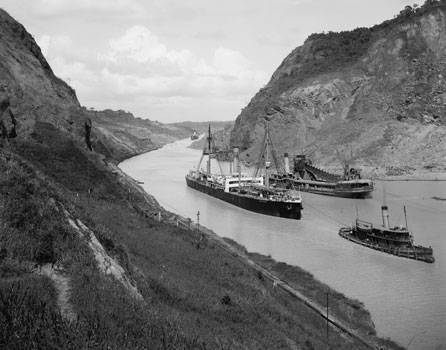En 1903, la pérdida de Panamá trajo consecuencias económicas para la República de Colombia, que apenas lograba reponerse de la Guerra de los Mil Días. El desprendimiento de esa región implicó pérdidas económicas, asi como un sentimiento nacionalista profundo.
01.3El quinquenio de Rafael Reyes (1904-1909)
El país quedó devastado luego de la Guerra de los Mil Días y debía resurgir de las cenizas. Se dieron las elecciones y debido a que el sistema electoral impedía la participación real de los liberales, de nuevo ganó un conservador. Sin embargo, se trataba de Rafael Reyes, un político hábil que entendió que la participación de los liberales en la toma de decisiones le traería un poco de paz al país.

Aunque Rafael Reyes era conservador, se alió con algunos liberales para gobernar. Esto despertó molestia en sectores más radicales de su propio partido que finalmente se convirtieron en opositores y presionaron para que renunciara.
Bajo el lema "Unión y concordia" Reyes invitó a algunos liberales a hacer parte del gabinete de ministros, puntualmente a Lucas Caballero (que había combatido en el bando liberal durante la Guerra de los Mil Días) como ministro de Hacienda y a Enrique Cortés como ministro de Relaciones Exteriores.
Reyes gobernó por cinco años, de allí que a su gobierno se le conoce como el "quinquenio de Reyes". En aquel periodo la economía colombiana se concentró en la exportación de café, banano, tabaco, caucho y quina, pero debido a que la industria nacional era escasa fue necesario importar mercancías de diferente tipo. No obstante, el país vio cómo se fortalecieron algunos sectores de la industria, particularmente la cervecera y la cementera.
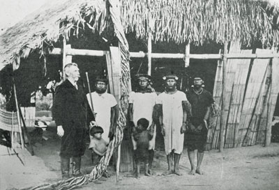A pesar de que Colombia se había sacudido del yugo colonial español, la situación de los indígenas empeoró pues su capacidad de trabajo fue explotada para satisfacer los intereses de empresarios que buscaban enriquecerse explotando recursos naturales esclavizando a un número importante de comunidades aborígenes. El Putumayo y la selva amazónica fueron territorios de los que se extrajeron enormes cantidades de materias primas como caucho y quina.
Durante el quinquenio de Reyes, el Estado fortaleció su intervención en proyectos de obras civiles. Por ello, una de las creaciones importantes fue el Ministerio de Obras Públicas con el que se inició un gran plan de construcción de vías férreas y fluviales. Los principales centros de producción de materias primas empezaron a conectarse gracias al tren y a la navegación por el río Magdalena.
Sin duda fue un panorama que generó optimismo. Sin embargo, durante el mandato de Reyes muchas tierras fueron entregadas a empresas extranjeras para la extracción de recursos como el petróleo y el banano, fundamentalmente. El presidente dio grandes facilidades para que multinacionales como la United Fruit Company explotaran recursos del país.
El derrumbe del gobierno de Reyes fue fraguándose con la acción de la oposición, dirigida por el conservador Miguel Antonio Caro, quien a pesar de ser de su mismo partido miraba con malos ojos que Reyes congeniara con los liberales y logró poco a poco que el Congreso obstaculizara las decisiones del presidente. Esto llevó a que el presidente cerrara el Congreso, asunto que fue visto como un acto de autoritarismo.
Finalmente, el presidente y su hija fueron víctimas de un atentado que terminó llevándolo a renunciar al cargo.
Practica
Luego de Rafael Reyes vinieron dos gobiernos que tuvieron corta duración, el de los generales Jorge Holguín Mallarino y Ramón González Valencia. Finalmente una Asamblea Constituyente eligió a Carlos E. Restrepo un conservador moderado.
La reforma constitucional de 1910
Durante el gobierno de Ramón González Valencia se convocó a una Asamblea Constituyente cuyo objetivo fue revisar y reformar la Constitución de 1886. Entre otras reformas se acordó: proteger el derecho a ejercer oposición, limitar el poder del presidente, reducir el periodo de mandato de seis a cuatro años y anular la reelección. Tras las discusiones de la Asamblea fue elegido presidente de la República el conservador Carlos E. Restrepo.
01.4La Unión Republicana
El presidente Carlos E. Restrepo logró convocar un grupo de liberales y conservadores que estuvieran en capacidad de pasar por encima de los odios de partido e interesados en modernizar el país. Esta Unión Republicana agrupó a personajes de la élite colombiana que luego gobernaron por el resto del periodo conocido como la Hegemonía conservadora (Pedro Nel Ospina, por ejemplo) y también algunos liberales que gobernaron décadas más tarde (Enrique Olaya Herrera y Eduardo Santos).
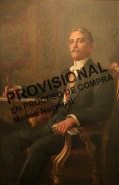Carlos Eugenio Restrepo fue un presidente que intentó bajar la intensidad del dogma conservador y su influencia en la sociedad. Por ello buscó aplicar medidas que promovieran la tolerancia política.
El gobierno republicano de Carlos E. Restrepo promovió la industria. Sin embargo su orientación laica (hacia la separación Iglesia y Estado) despertó desconfianza entre los conservadores más radicales que volvieron al poder una vez terminó la presidencia de Restrepo.
Durante el gobierno de Carlos E. Restrepo, el 6 de abril 1914 se firmó el Tratado Thompson-Urrutia que reconoció la separación de Panamá [VER]. Con el Tratado, Colombia dejó de reclamar la soberanía sobre el territorio panameño y Estados Unidos se comprometió a pagarle a Colombia 25 millones de dólares como indemnización.
01.5La Primera Guerra Mundial y la Hegemonía conservadora
En 1914 inició la Primera Guerra Mundial, uno de los acontecimientos más devastadores para la humanidad. Aquello coincidió con el ascenso al poder del conservador José Vicente Concha (1914-1918) y luego de Marco Fidel Suárez (1918-1921), quienes a pesar de la cercanía ideológica de las élites de Colombia con Estados Unidos, lograron mantener la neutralidad, asunto crucial para un país con dos océanos.
La Guerra trajo para Colombia consecuencias importantes. La baja en la demanda de productos nacionales así como el poco ingreso de mercancías provenientes de Europa exigió el fortalecimiento de industrias como las cerveceras y de textiles.
Esto empezó a transformar la sociedad colombiana. Para las industrias se necesitaron trabajadores y con ello fue surgiendo la clase obrera. También hacían parte de esa clase quienes trabajaban para empresas extranjeras como la United Fruit Company (en Ciénaga, Magdalena) y la Tropical Oil Company (en Barrancabermeja, Santander).
Un nuevo partido
En 1924 surgió el Partido Socialista Revolucionario (PSR). Debido a las condiciones difíciles en que vivían los obreros y a los bajos salarios, este partido impulsó protestas a nivel nacional. Pedían mejor trato por parte de empresas como la United Fruit Company y la Tropical Oil Company. También pedían servicios públicos. En muchas ocasiones este partido apoyó a los campesinos que trabajaban para los hacendados cafeteros y a los indígenas que luchaban por obtener tierra para cultivar.
Una vez terminó la Primera Guerra Mundial, Estados Unidos se convirtió en el principal socio de Colombia. Ello fortaleció la industria cafetera y la convirtió en el eje económico de la nación. Otras industrias como la textil y la cervecera despegaron con fuerza. La inversión extranjera tomó como propios recursos tales como el petróleo y el banano.
01.6La misión Kemmerer y el presidente Pedro Nel Ospina (1922-1926)
Para el año 1922 ascendió a la presidencia un ingeniero con amplios conocimientos en minería. Pedro Nel Ospina estudió en Estados Unidos y Alemania. Esto influyó para que pusiera en marcha medidas orientadas al desarrollo de una infraestructura que permitiera mover la economía.
Con el apoyo del embajador de Colombia en Estados Unidos, Enrique Olaya Herrera, se contrató la Misión Kemmerer, que consistió en hacer un diagnóstico y formular propuestas para mejorar la organización del Estado y lograr que este fuera más eficiente. Se crearon instituciones y ministerios [VER].
Una misión estadounidense transforma al Estado colombiano
Edwin Walter Kemmerer, experto en ciencias económicas, que ya había prestado sus servicios en otros países como Filipinas, México y Guatemala vino en 1923 para organizar instituciones para el manejo del dinero público, en particular el que llegaría como indemnización por la pérdida de Panamá.
Fueron años de bonanza en varios sentidos. Se vivían los felices años veinte. Pasada la posguerra, la economía mundial había repuntado, lo que implicó que países como Colombia recibieran atractivas ofertas de préstamos y créditos. Esto creó buenas condiciones para que se llevaran a cabo los planes que tenía Pedro Nel Ospina de modernizar el país.
El café, el banano y el petróleo pasaron por su mejor momento, lo que atrajo la atención de inversionistas y prestamistas extranjeros.
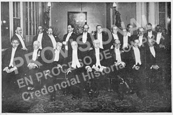La misión Kemmerer fue una delegación de economistas norteamericanos que diseño un modelo de organización institucional con el que se pretendió lograr una mayor eficiencia en el funcionamiento del Estado colombiano. Como resultado de esta misión se crearon el Banco de la República y la Contraloría General de la Nación.
El café colombiano despega
En el mundo entero el café se convirtió en una bebida fundamental. Colombia quiso aprovechar este hecho y en los años veinte se dio gran impulso para que el producto pudiera ser exportado. En 1927, durante el gobierno de Pedro Nel Ospina, que era ingeniero y también hacendado cafetero, se creó la Federación Nacional de Cafeteros de Colombia.
La aparente abundancia de dinero generó una sensación de optimismo sobre el presente y el futuro, que se reflejó en la adquisición de deudas con créditos.
Aquello se conoció más tarde como "la prosperidad al debe" [VER]. El país creció en vías férreas, se inició la aviación, se construyeron importantes oleoductos y se inició la búsqueda de más yacimientos petroleros. Todo ello requirió de grandes préstamos y, naturalmente, fue un gran paso para acumular una creciente deuda externa [VER].
01.7La masacre de las bananeras y el gobierno de Miguel Abadía Méndez (1926-1930)
El optimismo de los años veinte tuvo también su cara oscura; además de endeudarse, Colombia había ofrecido facilidades para que grandes empresas extranjeras explotaran recursos haciendo uso de la mano de obra nacional que era muy barata y por lo tanto reportaba grandes beneficios para aquellas empresas, que poco se preocupaban de la buena condición de sus trabajadores. Tenían además el apoyo del Ejército para cuidar sus instalaciones.
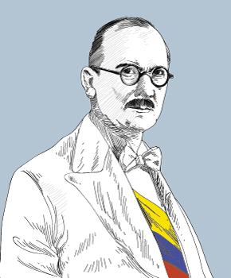Miguel Abadía Méndez fue el último presidente de la Hegemonía Conservadora. Durante su mandato ocurrió la imborrable "masacre de las bananeras".
Durante el gobierno del conservador Miguel Abadía Méndez, el Partido Socialista Obrero tomó la vocería de los trabajadores. El gobierno conservador, atemorizado ante el avance de la organización obrera expidió la "Ley Heroica" que prohibió el derecho de huelga y promovió la persecución y el castigo a cualquier organización o agrupación que atacara la propiedad privada.
La United Fruit Company, establecida en Ciénaga, Magdalena, tenía más de 20 000 trabajadores que laboraban en condiciones infrahumanas. Los trabajadores organizaron una huelga con la que buscaban pedir mejores condiciones como el acceso a salarios dignos y a seguridad social. Pero la respuesta del Estado y de la empresa fue desproporcionada y provocó la muerte de numerosos huelguistas.
El fin de la Hegemonía conservadora
La crisis de 1929, la masacre de las bananeras y la "prosperidad al debe" originada en los millonarios préstamos que hizo el país para lograr su sueño de modernización dejaron en entredicho a los gobiernos de origen conservador y le abrieron la puerta a otra orientación política. Surgió así la República liberal.
Practica
01.8Consolidación
Actividades para consolidar lo que has aprendido en esta sección.
-
02
La República liberal
Open or CloseEl crecimiento de la clase obrera, debido al avance de la industria y a los procesos de urbanización fue un motivo para transformar la política y la manera de orientar el Estado. Así mismo, la crisis de 1929 trajo desempleo y pobreza. Colombia vio como en la década de 1930 se dio un giro político que implicó algunos cambios sociales y económicos. Con la presidencia de Enrique Olaya Herrera empezó la República liberal.
02.1El primer presidente liberal del siglo XX: Enrique Olaya Herrera (1930-1934)
A partir del 1930 la política colombiana empezó a transformarse. Luego de 30 años de Hegemonía conservadora nuevas figuras políticas tomaron bajo su mando al Estado. Tenían el reto de enfrentar una realidad nacional marcada por la crisis y el empobrecimiento de las clases bajas y medias.
El continente latinoamericano empezó a cambiar su orientación económica hacia la industrialización por sustitución de importaciones. Así mismo empezó a implementar el modelo de Estado keynesiano que promovió la seguridad social y la intervención del Estado en la economía para controlar la libre competencia.
Los nuevos mandatarios liberales tenían claro que para poder gobernar era necesario tomar en cuenta los intereses de los obreros, por ello una de las características de la República liberal fue el acercamiento del Estado a las clases trabajadoras.
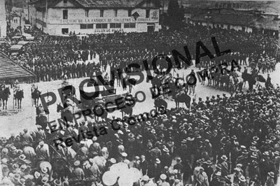Multitud en torno a Enrique Olaya Herrera. La llegada del presidente liberal trajo un cambio al país, luego de un largo periodo en el que los conservadores habían permanecido en el poder.
El gobierno de Olaya Herrera procuró estabilizar la economía; para ello impuso controles a las importaciones, a las tasas de interés de los bancos y continuó con el apoyo a los cafeteros. En el campo laboral se establecieron condiciones que mejoraron las reglas de vida de los trabajadores: jornadas de ocho horas y 48 horas semanales, protección social (acceso a servicios de salud). Así los liberales ganaron más seguidores, particularmente de las clases media y baja de las ciudades.
Practica
02.2La Guerra con el Perú: el único conflicto internacional en territorio colombiano (1932-1934)
El 1 de septiembre de 1932 se inició un conflicto en la frontera colombo-peruana. Ese día un puñado de peruanos, originarios de la ciudad de Loreto, se tomó el puerto de Leticia.
Para 1932, Leticia y en general la Amazonia no habían recibido atención del Estado colombiano. Su abandono fue aprovechado por los peruanos que desde tiempos de la Independencia se habían disputado con los colombianos el territorio. Así mismo, desde principios del siglo XX y hasta 1922 había sido predio de la Casa Arana una gran empresa peruano-británica que por muchos años extrajo caucho esclavizando indígenas y llegando a cometer un genocidio que llevó a la desaparición de comunidades enteras.
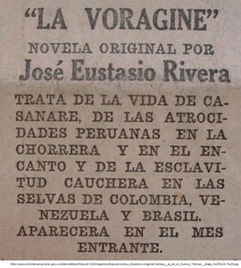Aviso de promoción de la primera edición de La vorágine. En 1924, José Eustasio Rivera publicó La vorágine una novela excepcional que reconstruye, entre otras múltiples realidades, los excesos de la Casa Arana con la olvidada Amazonia colombiana de aquel entonces.
Al ataque de los peruanos, Colombia intentó responder rápidamente, sin embargo no contaba aun con fuerza aérea ni fluvial. Por ello el gobierno de Olaya Herrera debió hacer compras inmediatas de dotación y armamento. Solicitó préstamos y convocó a la ciudadanía a donar dinero. Para ello utilizó la prensa escrita y las emisoras de radio públicas y privadas que empezaron a surgir en los años treinta.
La solución de la guerra llegó con el Protocolo de Río de Janeiro firmado el 24 de mayo de 1934.

La guerra no tuvo grandes proporciones. Dejó como resultado inmediato un total de 69 víctimas. Muchas de ellas murieron más por enfermedades de transmisión sexual que por el propio combate. Sin embargo de las donaciones que hicieron los ciudadanos colombianos quedó una cantidad que fue utilizada por el gobierno de Olaya Herrera para crear el Instituto Nacional de Cancerología.
02.3La Revolución en Marcha de Alfonso López Pumarejo (1934-1938)
En 1934 ascendió al poder Alfonso López Pumarejo promovió con éxito la Revolución en Marcha, una política social que incluía mejoras en la educación, la salud y el trabajo, pero que además tuvo un proyecto central: la reforma agraria.
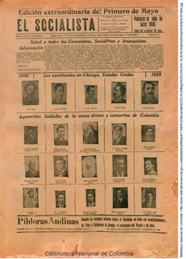A partir de la República liberal la clase trabajadora tuvo una mayor participación política. Incluso, el mismo Estado se encargó de apoyar la creación de sindicatos.
La Revolución en Marcha tuvo como punto de partida la reforma de la Constitución que se hizo en 1936. Se establecieron tres grandes cambios:
- Función social de la propiedad. Se buscó que latifundios ociosos (grandes porciones de tierra sin cultivar que estaban en manos de terratenientes y no tenían en cuenta el interés común sino los intereses privados) fueran distribuidos entre los campesinos sin tierra. Para poner en marcha esta función se creó la Ley 200 de 1936, también llamada Ley de Tierras. Sin embargo, la distribución fue lenta y poca pues tuvo la oposición de grandes terratenientes y de los sectores conservadores.
- Intervención del Estado en la economía. Se buscó que el Estado regulara la producción, distribución y consumo de riquezas pensando en el bienestar de los trabajadores.
- Ampliación de las funciones del Estado. Se buscó solucionar carencias de la población en términos de salud y educación.
La Revolución en Marcha
La pobreza y las malas condiciones de los trabajadores llevaron a que el Estado colombiano asumiera su responsabilidad como garante del bienestar. Por ello, durante el gobierno de Alfonso López Pumarejo, en el año 1936, se diseñó una política pública conocida como la Revolución en Marcha.
La oposición que encontró López Pumarejo por parte de los sectores más ricos de la sociedad fue muy fuerte. Por lo tanto al final de su mandato empezó a echar para abajo algunas medidas.
Practica
02.4La amistad con Estados Unidos y el gobierno de Eduardo Santos (1938-1942)
El periodo de Eduardo Santos, quien era empresario y periodista, se conoció como el gobierno de "la gran pausa" [VER], en particular porque las reformas que empezaron con el gobierno de López Pumarejo detuvieron su impulso, aunque se mantuvo el buen trato a los trabajadores (particularmente aquellos que compartían las ideas del Partido Liberal) y el estímulo a la creación de industrias nacionales.
La gran pausa tuvo también una causa: la Segunda Guerra Mundial; esta obligó al gobierno a crear embajadas y a facilitar el ingreso de funcionarios de Estados Unidos para realizar actividades de espionaje contra los países del Eje (Alemania, Japón e Italia). La permisividad con el país del norte no fue bien vista por los sectores populares y de izquierda que tenían presente el recuerdo de la pérdida de Panamá y la masacre de las bananeras.
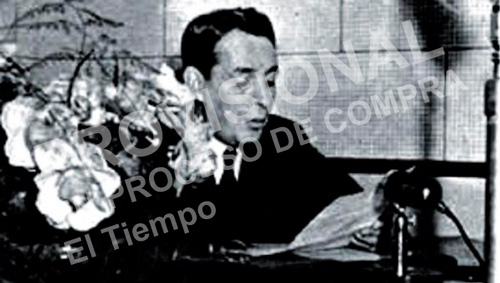En 1940 se inauguró la Radiodifusora Nacional de Colombia, emisora pública del país. El presidente Eduardo Santos fue el primero en hablar antes los micrófonos.
02.5La reelección de Alfonso López (1942-1946)
Alfonso López Pumarejo volvió a la política en 1942. Su segundo gobierno fue muy distinto al primero. Propuso muy pocas reformas pero además estuvo caracterizado porque la oposición conservadora ya empezaba a pedir más participación política [VER].
Un hecho marcó el segundo mandato de López: el golpe militar de Pasto ocurrido el 10 de julio de 1944. Ese día, cuando el presidente visitaba la ciudad del sur, para asistir a unas maniobras de entrenamiento del Ejército, fue arrestado, amarrado y trasladado a la Hacienda Consacá por órdenes del coronel Diógenes Gil. El episodio tuvo una corta duración. Los militares golpistas, que en un principio manifestaron total seguridad y unión, pronto se rindieron y dejaron en libertad al presidente. Entre tanto, a pesar de lo difícil de las comunicaciones, en Bogotá se supo la noticia de inmediato y se declaró el Estado de sitio.
Finalmente, López regresó a la capital y aunque salió bien librado, aquel intento de golpe dejó entrever que los sectores más conservadores de la sociedad querían que la República liberal llegara a su fin.
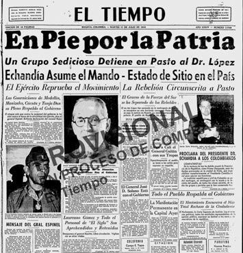En la ciudad de Pasto, el presidente López Pumarejo fue secuestrado por un puñado de militares de extrema derecha que no compartía el enfoque de sus reformas sociales.
El presidente López decidió renunciar y asumió como presidente designado el liberal Alberto Lleras Camargo quien ocupaba el cargo de Ministro de Gobierno. Alberto Lleras gobernó por un año. Así llegó a su fin la República Liberal.
Practica
02.6Consolidación
Actividades para consolidar lo que has aprendido en esta sección.
-
03
Los gobiernos conservadores (1946 -1953)
Open or CloseDesde el gobierno de López, el Partido Liberal había empezado a dividirse. Por una parte estaban los seguidores del abogado Jorge Eliécer Gaitán, cuyo discurso era de oposición popular a las oligarquías conservadoras y liberales; y Gabriel Turbay, de ideas más tradicionales.
La división de los liberales impidió que ganaran de nuevo las elecciones y facilitó el regreso de los conservadores.
Aprende
03.1Mariano Ospina Pérez (1946-1950)
Mariano Ospina Pérez era nieto de Mariano Ospina Rodríguez, presidente entre 1857 y 1861 y sobrino de Pedro Nel Ospina, quien había sido presidente durante la Hegemonía conservadora. Al igual que su tío era gran empresario cafetero.
Entre 1930 y 1934, Mariano Ospina Pérez fue gerente de la Federación Nacional de Cafeteros. Su vínculo con este sector y su posición de empresario lo hacían objeto de desconfianza por parte de las clases sociales que seguían a Jorge Eliécer Gaitán. A pesar de ello, Ospina Pérez tuvo en cuenta que el paso de un país rural a un país de ciudades, con cada vez más trabajadores urbanos, así como la presencia de epidemias y malas condiciones de higiene por el hacinamiento, hacían de la salud un asunto de decisión política. Por ello durante su mandato se creó el Ministerio de Higiene y el Instituto de los Seguros Sociales.
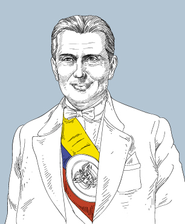Mariano Ospina Pérez fue el presidente conservador que gobernó una vez terminó la República liberal.
Aunque estas acciones fueron de gran importancia, el ambiente político era desfavorable. Los odios entre partidos llegaban a un punto límite. Desde distintos lados se atizaba el fuego: el gran orador conservador Laureano Gómez y el carismático liberal Jorge Eliécer Gaitán hacían enardecer a sectores opuestos de la sociedad colombiana. Tras la victoria de Ospina Pérez corrió el rumor de que las elecciones habían sido fraudulentas. Aquello propició confrontaciones y múltiples muertes en distintos lugares del país.
El ascenso de Jorge Eliécer Gaitán
Durante el gobierno de Mariano Ospina Pérez, la figura del liberal Jorge Eliécer Gaitán tuvo gran acogida entre los sectores populares pues se presentó como un líder capaz de entender las necesidades más urgentes de los excluidos.
Gaitán, que se caracterizaba por ser gran orador, se apoderó de las plazas públicas y de las calles en donde tenía gran acogida entre los sectores más humildes de la sociedad colombiana que sentían que el poder era de unos pocos y que las reformas sociales tomaban demasiado tiempo en cumplirse. De otra parte, empezaron a ocurrir asesinatos de los que se culpó al Estado.
En medio de ese ambiente tan enrarecido, Jorge Eliécer Gaitán convocó a la "Marcha del silencio" el 7 de febrero de 1948. Además, renunciaron los liberales que ocupaban cargos en la rama ejecutiva.
03.2El Bogotazo
El 8 de abril de 1948 Jorge Eliécer Gaitán, que era abogado, había salido victorioso de uno de sus pleitos. El 9 de abril sería un día de celebración. Pasado el mediodía salió de su oficina en el centro de Bogotá, lo acompañaban varios amigos, entre ellos el médico Pedro Eliseo Cruz quien había sido ministro de Higiene y uno de los liberales que acaba de renunciar. La algarabía callejera fue interrumpida con algunos disparos. Gaitán cayó al suelo y murió instantáneamente. Con su muerte se fue la ilusión de las clases más pobres. De inmediato empezó lo que poco después se conoció como "el Bogotazo".
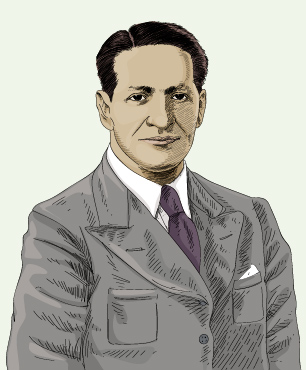Jorge Eliécer Gaitán se presentó como el líder de los sectores excluidos. Su discurso contra las oligarquías fue bien recibido por amplios sectores populares que depositaron en él la esperanza de lograr una mayor igualdad.
Ese día, y por 48 horas, los odios partidistas se salieron de toda proporción: saqueos e incendios, apagones; los llamados de las emisoras a tumbar el gobierno de Ospina Pérez y a tomar las armas fueron el reflejo de lo poco que el Estado había logrado en construir un orden social que tuviera en cuenta las necesidades de todos. Luego del Bogotazo la violencia se recrudeció por muchos años; la muerte de colombianos llegó a cifras formidables.
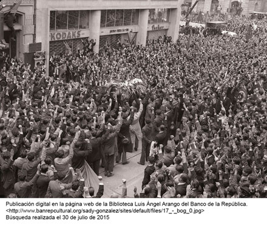Los desastres provocados tras el asesinato de Jorge Eliécer Gaitán fueron el reflejo de una incontenible furia popular que vio en la muerte del líder el fin de una esperanza.
A pesar de los hechos del 9 de abril, Mariano Ospina Pérez continuó en el poder hasta terminar su mandato, no sin haber decretado el Estado de sitio, cerrado el Congreso y decretado la censura de prensa y restringido otras libertades civiles como el derecho de reunión.
Las elecciones de 1949 se llevaron a cabo en un ambiente lúgubre y poco democrático. La vida cotidiana en las distintas poblaciones era de zozobra. Pocas horas antes de las elecciones había ocurrido una masacre en la sede del Partido Liberal, lo que atemorizó más a los votantes. Los liberales se retiraron de la competencia. La victoria fue para el conservador Laureano Gómez Castro, un opositor radical y gran crítico de las medidas sociales del Partido Liberal [VER].
Laureano Gómez no logró culminar su mandato pues cayó enfermo y debió retirarse para ser reemplazado por su ministro de Gobierno Roberto Urdaneta.
Durante su gobierno, la violencia alcanzó proporciones importantes. Luego del asesinato de Gaitán muchos liberales que sintieron su vida en peligro y que además vieron irse sus esperanzas huyeron a zonas apartadas para conformar guerrillas.
Para las élites liberales e incluso para un sector del conservatismo, el gobierno de Laureano Gómez resultaba despótico. El recrudecimiento de la violencia motivó un pacto entre un sector cercano al conservador Mariano Ospina Pérez, la Iglesia, las Fuerzas Armadas y un sector de las élites liberales. De ese pacto surgió la figura del general Gustavo Rojas Pinilla, que ascendió al gobierno mediante un golpe militar que depuso a Laureano Gómez, quien debió exiliarse en Nueva York.
03.3Colombia participa en la Guerra de Corea
Entre 1951 y 1953 ocurrió un episodio internacional: la Guerra de Corea, uno de los conflictos más sangrientos del siglo XX, después de las dos guerras mundiales. Colombia fue el único país suramericano que participó, con la creación y envío del Batallón Colombia. La guerra llegó a su fin en 1953, con la firma de un armisticio en el que no hubo vencedores ni vencidos [VER].
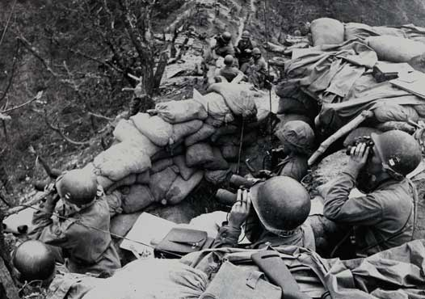Colombia participó en la Guerra de Corea, que ocurrió entre 1951 y 1953. Más de mil soldados fueron enviados al frente de batalla. Tuvieron que entrenarse y combatir en una tierra desconocida. Aun muchos de ellos espera la recompensa y el reconocimiento social por semejante hazaña.
03.4Consolidación
Actividades para consolidar lo que has aprendido en esta sección.
-
04
La dictadura militar de Gustavo Rojas Pinilla (1953-1957)
Open or CloseEl 13 de junio de 1953 ocurrió el golpe militar que permitió el ascenso del general Gustavo Rojas Pinilla. Amplias capas de la población recibieron con beneplácito la llegada del general pues esperaban que con ello se acabara la violencia.
Al estilo de los generales populistas que en ese periodo gobernaban en otros países, como Juan Domingo Perón en Argentina o Getulio Vargas en Brasil, Rojas Pinilla puso en marcha una serie de políticas sociales que le valieron la gratitud del pueblo.
Apoyado en su hija María Eugenia y a través de la Secretaría de Asistencia Social, Sendas, se acercó a la población más pobre llevando mercados, algunos servicios públicos y creando escuelas. Así mismo, durante su gobierno se amplió la infraestructura vial y de aeropuertos y además se fortaleció la red de comunicaciones.
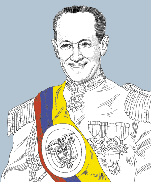Gustavo Rojas Pinilla llegó al poder tras duros años de violencia. Su paso por el poder se destacó por el desarrollo de políticas sociales dirigidas a ayudar a los sectores pobres. Sin embargo, hechos como los del 8 y 9 de junio de 1954 en los que murieron varios estudiantes, así como el cierre delos periódicos más importantes del país, precipitaron su caída.
El 13 de junio de 1954, al cumplirse el primer año de su mandato, inauguró el servicio de televisión que por primera vez llegó a hogares colombianos. Rojas y su gabinete celebrarían con júbilo ese día; sin embargo un hecho opacó la celebración: el asesinato de estudiantes universitarios ocurrido los días 8 y 9 de junio anteriores. En confusos hechos, el estudiante de medicina de la Universidad Nacional, Uriel Gutiérrez, cayó muerto. Se acusó a la policía. Al día siguiente en una marcha de protesta, se presentaron hechos violentos en los que cayeron otros tantos estudiantes de universidades públicas y privadas.
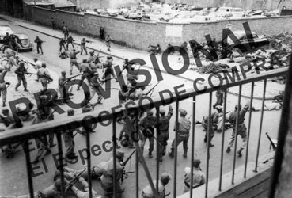Hechos como los del 8 y 9 de junio de 1954 en los que murieron varios estudiantes, así como el cierre de los periódicos más importantes del país, precipitaron la caída del general Gustavo Rojas Pinilla y la llegada de una junta militar de transición que le abrió paso al Frente Nacional.
Desde aquel momento, la popularidad de Rojas en algunos sectores de la sociedad empezó a verse afectada. No obstante, su política social seguía teniendo muchos seguidores. Además, el mismo 13 de junio de 1954 decretó el perdón a los guerrilleros y la posterior firma de la paz. Muchos guerrilleros liberales entregaron sus armas y con ello la situación de violencia disminuyó.
A pesar de esos esfuerzos, al asesinato de los estudiantes, le siguió el cierre de periódicos de circulación nacional como El Tiempo y El Espectador, así como la masacre en la Plaza de Toros de Bogotá. Aquellos actos fueron interpretados por las élites conservadoras y liberales como autoritarios y dictatoriales. Aunque Rojas llegó al poder con el beneplácito de aquellas élites, estas mismas se encargaron de ponerle fin a su gobierno el 10 de mayo de 1957. Ese día se hizo efectivo el Pacto de Benidorm, acordado por los expresidentes Alberto Lleras y Laureano Gómez.
Se nombró una junta militar encabezada por el general Gabriel París. Esta junta estuvo en el gobierno hasta el 7 de agosto de 1958, año en que se celebraron elecciones para darle paso al primer presidente de una coalición política entre liberales y conservadores, que se llamó el Frente Nacional [VER].
04.1Consolidación
Actividades para consolidar lo que has aprendido en esta sección.
-
05
Competencias
Open or ClosePon a prueba tus capacidades y aplica lo aprendido con estos recursos.
-
Fin de unidad:
Open or Close
repasoWebs de referencia
- El periódico El Espectador explica los sucesos del 8 y 9 de junio de 1954, durante el gobierno del general Rojas Pinilla.
- Sitio del Centro de Memoria, paz y reconciliación hace un recuento sobre Guadalupe Salcedo y la firma de amnistía con guerrilleros durante el gobierno del general Rojas Pinilla.
- Sitio web que presenta los pormenores de la masacre de las bananeras.